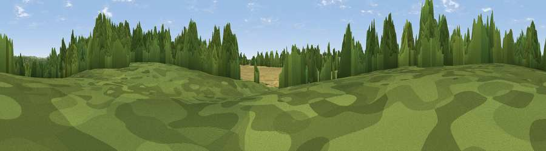

Fiddlers Green
#44987 in England · top 92% of its area beats it · near Knowle · path 113 mWhere it is
The exact computed spot (SU 56654 09958). Click the marker for map links.
Public access: the nearest public right of way is about 113 m away — the final stretch may cross private land. Computed from Natural England's CRoW access layer and OpenStreetMap rights of way — not the legal definitive map. Always verify locally.
The view, rendered

A 360° render of this exact spot computed from the terrain model, tree cover and land cover — summer colours, afternoon light, calibrated against photographs of famous viewpoints. Real trees, hedges and buildings will differ in detail.
The panorama
Grey silhouette: terrain skyline in each direction (720 bearings, Earth curvature and refraction included). Dashed green: skyline with trees (+15 m) and buildings (+8 m) as obstacles. Blue strip: how far the ground is visible on each bearing.
Where the view opens
Wedge length = distance to the farthest visible ground on that bearing (vegetation-aware). Rings at 10, 25 and 50 km.
What fills the view
46% woodland · 29% cropland · 20% grassland · 4% built-up
Angular shares of the visible panorama (visual magnitude), not map area. Landscape diversity 0.51 (0–1 Shannon).
Key numbers
More beautiful places nearby
The staircase of upgrades: each row has a higher view potential than everything closer. Driving times are estimates from straight-line distance, calibrated against real road routing — check an actual route before setting out.
| Place | Direction | Drive | Score |
|---|---|---|---|
| Crockerhill | E · 1 km | ~4 min | 44.2 |
| Viewpoint near Southwick | ESE · 8 km | ~16 min | 74.3 |
| Viewpoint near Southwick | ESE · 8 km | ~17 min | 76.6 |
| Viewpoint near Buriton | ENE · 18 km | ~32 min | 80.0 |
| Beacon Hill | ENE · 25 km | ~41 min | 85.8 |
| Mottistone Down | SSW · 30 km | ~47 min | 87.2 |
| Viewpoint near St. Lawrence | S · 32 km | ~50 min | 88.2 |
| Viewpoint near Niton | SSW · 35 km | ~53 min | 89.2 |
50.88634, -1.19597 · source: osm peak · position refined by local search. Computed location — check access rights before visiting.